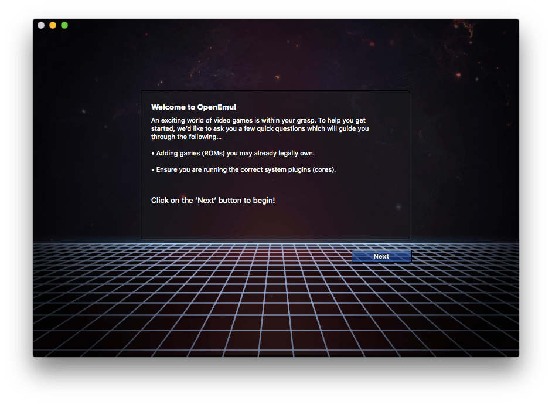
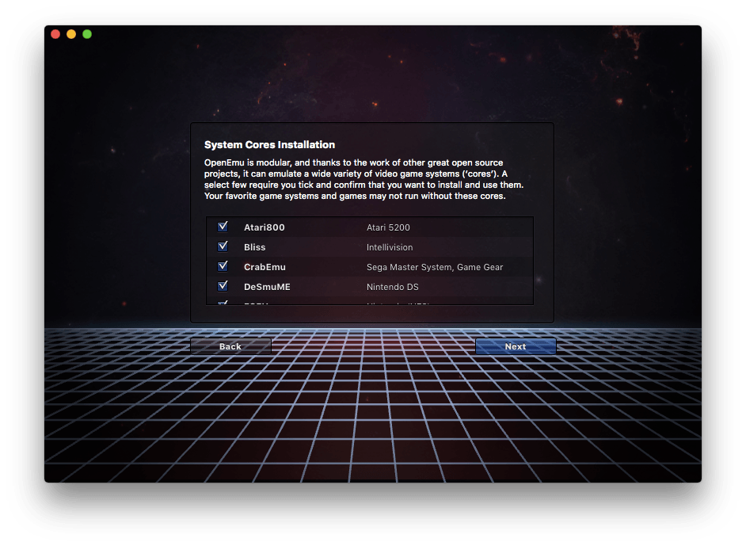
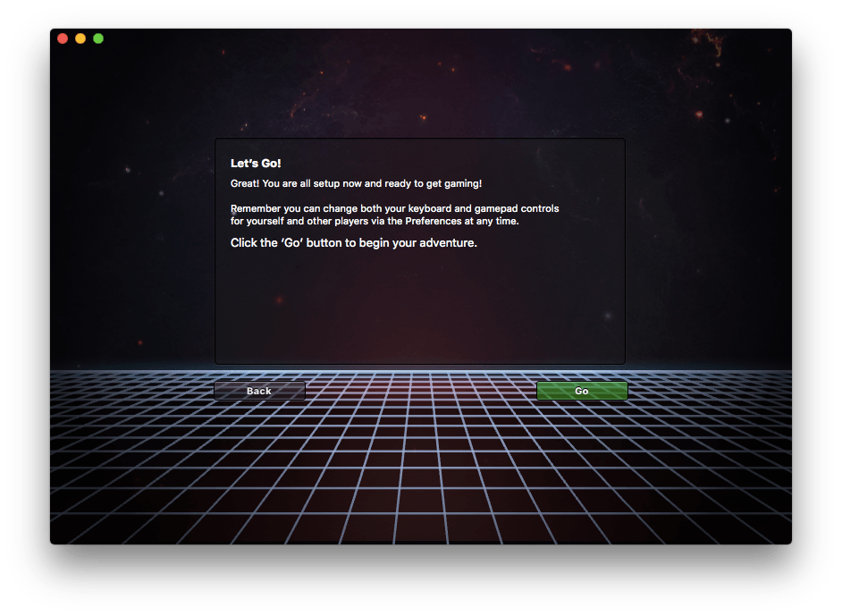

The first time you start OpenEmu, you will be greeted with the Setup Assistant. It will help you get up and running with OpenEmu.

This screen has you confirm that you want to install the emulator cores. Leave these alone unless you really really know what you are doing!

That's it! The setup assistant is finished. Press "Go" to begin enjoying your games!
